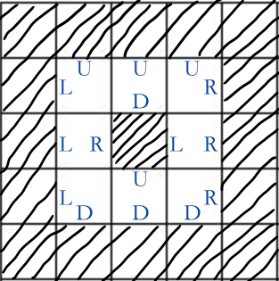

Comet OJ
Comet OJ输入第一行为一个正整数 $n$，代表有 $n*n$ 的迷宫。$(5\le n \le 15)$
接下来输入迷宫的样式，"S" 代表起点， "T" 代表终点，"."代表能走的地方，"#" 代表墙壁。 起点可以通过任意多次。保证地图的第一行、第一列、最后一行、最后一列一定都是墙壁，且起点和终点恰只有一个，也保证小智一定可以按照描述里说的方式从起点走到终点。
小智一行好不容易走出了常磐森林，终于来到了尼比市。皮卡丘似乎很疲劳，小智于是带皮卡丘去宝可梦医疗中心看看。在那里，小智发现了宝可梦联盟地区大会的宣传海报，他急切的想要参加。要想参加比赛，首先得打败好几位城镇道馆训练家，拿到认证徽章才行。小智信心满满，在皮卡丘恢复之后，他们马上就去挑战道馆训练家小刚。
尼比是灰色的意思，这个从城市自古以来就是以石头出名的，所以尼比道馆里外都布满了石头，从外面看简直像个迷宫一样。小智和皮卡丘一起走进尼比道馆，里面漆黑一片，灯突然亮了起来，角落里的小刚眯着眼睛说:"你是来取道馆认证徽章的吧？"小智很开心:"是啊！我要打败你，然后获得徽章！"小刚是个心地善良的人，他了解了一番小智的情况后，决定不用传统方法和他比赛，小刚站起来，说:"你的皮卡丘目前是打不过我的大岩蛇的，电气系根本压制不了岩石系，我不打实力差距太大的比赛，免得说我欺负人。"
小智心里虽然听到这些话很不服，但是想到皮卡丘已经进了两次医院了，如果没有绝对的胜算的话，恐怕又会是重伤进医院的结果。小智扭头准备出门，这时，小刚叫住了他，说:"徽章不想要啦？虽然不用宝可梦战斗，但是如果你能通过的我考验，徽章一样送给你。"话一说完，从两边出现很多大石头，正在往中间靠拢，小智和皮卡丘快步跑出石头的范围。
小刚说:"这是一个迷宫，并给你迷宫地图，迷宫大小为 $n \times n$，字符 "S" 的地方是起点，字符 "T" 的地方是终点，字符 "#" 的地方代表牆壁，每次只能往上下左右的四格移动。如果你能从起点走到终点，就算你通过了我的考验！"
小智挠了挠头，说:"那我恐怕要走上一整天…" 小刚想起自己家里还有弟弟妹妹等着他回家做饭，无奈地提示他说:"起点的位置的下方一定是墙壁，只要用右手贴着地图中起点下方的墙壁一直沿着墙壁往前走，就很快能走出去！"
于是小智走进了迷宫…...
现在给出迷宫的大小和样式，保证按照小刚说的方法一定能走到终点，请把他路程中右手贴的每一面墙在地图里的方向记录下来并按顺序输出。(无论小智怎么走，都不会旋转地图，所以地图的上下左右是固定的)
输入第一行为一个正整数 $n$，代表有 $n*n$ 的迷宫。$(5\le n \le 15)$
接下来输入迷宫的样式，"S" 代表起点， "T" 代表终点，"."代表能走的地方，"#" 代表墙壁。 起点可以通过任意多次。保证地图的第一行、第一列、最后一行、最后一列一定都是墙壁，且起点和终点恰只有一个，也保证小智一定可以按照描述里说的方式从起点走到终点。
請把小智路程中右手贴的每一面墙的方向记录下来并按顺序输出('D': 下，'R'：右，'U'：上，"L": 左)，在起点时贴着的下方那面墙也要输出(所以输出的第一个字符一定是 'D')。到达终点时若右手有贴着在终点上下左右的墙时，也要输出。参考输入样例及样例解释应该能帮助你更了解题意。
5
#####
#...#
#.#.#
#TS.#
#####DDRRRUUULLL5
#####
#TS.#
#.#.#
#...#
#####DLUR5
#####
#T..#
#..##
#S#.#
#####DRDRDRUUU8
########
#......#
#.#..#T#
#..##.##
#.#....#
#.##.#.#
#.S#...#
########DRURRDRURDLDDRDL
上图为样例一和样例二的题图，斜线部分代表墙，空白部分代表可以走的格子，为方便起见，我们称由上数来第 $i$ 行且由左数来第 $j$ 列的格子座标为$(i,j)$ (由 $1$ 开始编号)，所以第一组样例的起点座标是 $(4,3)$，终点座标是 $(4,2)$，由于是右手贴着下方的墙，故开始时行走的方向是朝向地图右方，于是包含起点的行走过程将是：$(4,3)\rightarrow(4,4)\rightarrow(3,4)\rightarrow(2,4)\rightarrow(2,3)\rightarrow(2,2)\rightarrow(3,2)\rightarrow(4,2)$，虽然只有通过 $8$ 格，但考虑到手贴着的墙壁面数，实际上有 $11$ 面，依序是 $(4,3)D\rightarrow(4,4)D\rightarrow(4,4)R\rightarrow(3,4)R\rightarrow(2,4)R\rightarrow(2,4)U\rightarrow(2,3)U\rightarrow(2,2)U\rightarrow(2,2)L\rightarrow(3,2)L\rightarrow(4,2)L$ ($(x,y)dir$ 代表手贴着的墙是格子$(x,y)$ $dir$ 方向，$dir$ 是 "DRLU"的其中一个字符)，
而样例二中，是从格子$(2,3)$ 开始走，不考虑墙壁的话经过的格子依序是：$(2,3)\rightarrow(2,4)\rightarrow(3,4)\rightarrow(4,4)\rightarrow(4,3)\rightarrow(4,2)\rightarrow(3,2)\rightarrow(2,2)$，虽然有通过 $8$ 个格子，但实际上右手贴过的墙只有四面，依序是：$(2,3)D\rightarrow(3,4)L\rightarrow(4,3)U\rightarrow(3,2)R$。
最后请大家看到范例三，提醒大家一下，并无法从格子 $(3,3)$ 穿越到斜对角的空格 $(4,4)$。